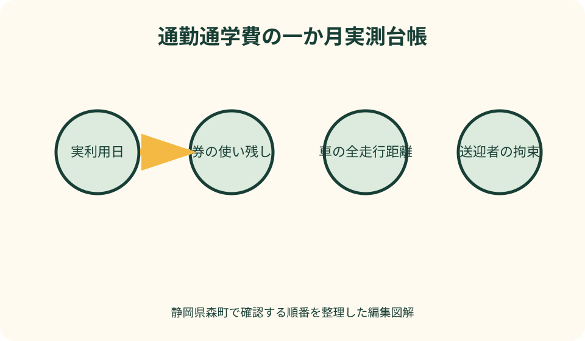
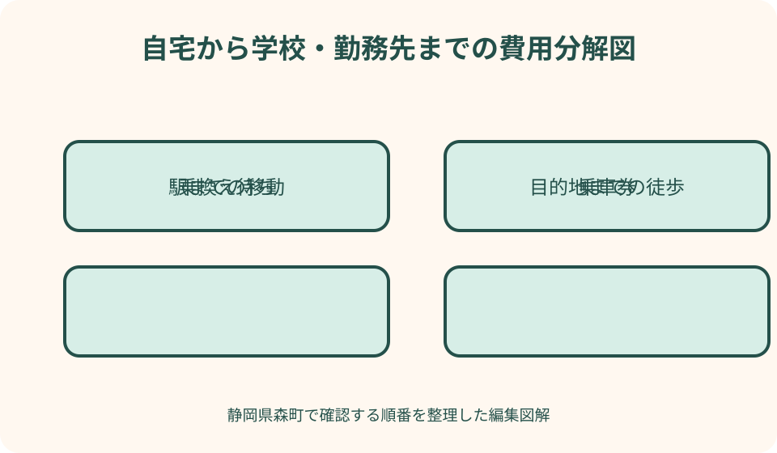

交通・外出・生活動線｜最終確認 2026-08-10
静岡県森町の通勤通学費｜定期・回数券・送迎を一か月実測する
通勤通学費を比較するとき、運賃だけを足すと家族送迎の燃料、駅の駐車、待ち時間、運休時のタクシーや欠勤リスクが抜けます。一方、定期券の表示額だけを月の日数で割っても、在宅勤務、欠席、長期休暇、途中駅の利用を反映できません。静岡県森町の町営バス、天竜浜名湖鉄道、秋葉バスなどの公式情報を購入前に確認し、一か月を実測して次の購入方法を決める台帳を作ります。
交通費を運賃だけで計算しない
比較表の第一列は、本人が交通事業者へ支払う運賃です。第二列に駅・停留所までの移動、第三列に送迎者の費用、第四列に所要時間、第五列に運休・遅延時の追加負担を置きます。
現金で払った乗車一回と、事前に買った定期券を同じ日に二重計上しないよう、支出日と利用日を分けます。購入時は全額を資金支出へ、利用日はその券を使った事実へ記録します。
家族送迎は無料ではありません。燃料、有料道路、駐車料金に加え、往復運転、駅での待機、迎え直しに使った時間を記録し、家計と家族の予定の両方を見ます。
一か月の最安額だけで翌月を決めないことも重要です。遅刻の起きにくさ、雨天、最終便、荷物、本人の疲労を評価し、金額差に見合うかを家族と確認します。
通勤と通学を別の帳簿にする
通勤では、勤務日、在宅勤務、出張、交替勤務、残業、会社の交通費支給規程が利用日数を左右します。会社が認める経路と本人が便利だと思う経路が同じとは限りません。
通学では、授業日、長期休暇、試験、部活動、土曜登校、実習、保護者送迎が混在します。通学定期に必要な学校の証明や対象区間は、学校と交通事業者へ確認します。
きょうだいが同じ駅を使っても、学校の始業・終了時刻、部活動、学年で送迎回数が変わります。一世帯の『通学費』にまとめず、利用者ごとに行を分けます。
月途中の就職、転校、休職、実習先変更がある場合は、定期の払戻しや区間変更を見込みで計算しません。購入前に当事者公式の現行条件を確認します。
町営バスは予約便と券種を同時に確認する
森町営バスは大河内線と吉川線が案内され、事前予約が必要な便があります。通勤・通学に使う便が毎日同じ運行形態か、曜日や季節で変わらないかを最新時刻表で確かめます。
町公式ページには運賃、回数乗車券、定期乗車券、販売場所の案内があります。画面の数値を保存したままにせず、購入日、券種、利用者区分、区間、販売窓口を確認票へ転記します。
予約便は、乗車時刻だけでなく予約締切とキャンセル連絡も生活時間に含めます。家族が予約する場合の可否、帰宅時刻が変わった場合の扱いを運行側へ確認します。
町営バスから天浜線や民間バスへ乗り継ぐ場合、待ち時間と徒歩を一つの行程にします。紙上で数分接続していても、降車位置からホームまで実際に歩いて測ります。
天浜線は定期・回数・都度払いを分ける
天竜浜名湖鉄道は、普通運賃と定期運賃、時刻表を公式ページで案内しています。遠州森駅など利用駅を選び、目的地までの区間と購入窓口を確認します。
回数券は、一定回数分の運賃で追加の乗車分が付く券種が案内されていますが、利用区間、販売駅、使用条件は購入時点で再確認します。月の利用が少ない人ほど使い残しも記録します。
定期券は、毎日往復する想定に合いやすい一方、在宅勤務や休校が多い月では実乗車一回当たりの負担が変わります。購入額を予定日数ではなく、実際に使った日数でも割ります。
天浜線公式は駅での購入・車内精算について現金の案内を掲示しています。決済方法は変更され得るため、カードだけで乗れると決めず、初日の前に公式ページを読みます。
秋葉バスは通勤・通学の購入条件を聞く
秋葉バスは遠州森町から袋井方面などへの路線を運行し、公式サイトで運賃・定期券を案内しています。利用する停留所の正式名称と区間を確認して見積りを取ります。
通学定期と通勤定期では、申込書、証明、期間、購入可能日が異なる場合があります。家族の過去の購入例ではなく、現在の学校・勤務先と利用区間で窓口へ確認します。
スマートフォンを使う定期券など複数の方式が案内される場合は、端末故障、機種変更、電池切れ、払い戻しの手続も比較します。便利さと復旧方法を同じ表にします。
路線変更、工事迂回、学校休業日ダイヤなどがあれば、定期券を持っていても予定どおり着けるとは限りません。運行情報を毎朝確認する時間も日課へ含めます。

定期券は実利用一回当たりで見る
定期券の購入額を、有効期間中の実乗車回数で割ると、生活に即した一回当たり負担が見えます。往復を二回と数えるか一日と数えるかを家族内で統一します。
定期区間外へ乗り越した日、別経路を使った日、休んだ日は別列にします。追加運賃を定期額へ埋め込むと、どの変更が費用を増やしたか分からなくなります。
通勤手当が支給される場合は、会社が負担した額と家計の自己負担を分けます。税務や給与上の扱いをこの記事で決めず、勤務先の規程と給与明細を確認します。
定期券を紛失した場合の再発行や、不使用期間の払い戻しは券種により異なります。購入前に記名、媒体、手数料、手続場所を確認し、写真または番号を安全に記録します。
回数券は使い残しと利用期限を追う
回数券は、利用日が不規則な人に合う場合があります。購入額だけで得と判断せず、利用できる区間、対象者、期限、払い戻し、他人への譲渡可否を公式案内で確認します。
台帳には券の購入日、総枚数、使用日、残数を記録します。財布や家族の車へ分散させると残りが分からなくなるため、保管場所と利用者を決めます。
通学で長期休暇へ入る前、通勤で在宅勤務が増える前は、残数を確認してから次の冊子を買います。安いからとまとめ買いし、制度改定や経路変更で使えなくなるリスクを避けます。
紛失した紙券が戻るとは限りません。定期券との価格差だけでなく、持ち忘れ時の都度払い、保管の手間、家族が代わりに買う時間も比較します。
都度払いは少ない月の基準になる
現金などの都度払いは、利用が少ない月の比較基準です。実際の乗車日ごとに支払額を記録すれば、定期券や回数券を買った場合との差を翌月に試算できます。
ただし、細かな現金の準備、両替、乗車整理券、降車精算の手間があります。初めて利用する人は、交通事業者の案内で乗り方と決済方法を確認します。
定期券を忘れた日の都度払いは、定期の利用価値と別の追加費用です。領収の有無、会社や学校への申告を確認し、単に『交通費が増えた日』で終わらせません。
複数交通を一日で使う場合は、鉄道、バス、タクシーを別々に記録し、乗継ぎのための飲食や待機場所は生活費欄へ分けます。比較範囲を月初に決めます。
送迎燃料は距離と実給油から測る
家族送迎の燃料費は、カタログ燃費だけで決めず、一か月の走行距離と給油記録から概算します。通勤通学以外の走行を含む場合は、送迎区間を地図で分けます。
自宅から駅へ送り、家族が帰宅し、夕方また迎えに行くなら、本人の片道距離ではなく車が走った全区間を数えます。空車で戻る距離を落とさないことが重要です。
給油単価は日々変わるため、固定価格を記事へ置きません。レシートの日付、単価、給油量を残し、月の平均または実際の給油費から送迎分を見ます。
車両費には燃料以外にも維持費がありますが、家計比較でどこまで含めるかを決めます。まず変動費、次に駐車・有料道路、最後に車両維持の按分を別段階で計算します。
送迎時間を家族の拘束として記録する
送迎者の時間は、運転中だけではありません。出発準備、本人を待つ時間、渋滞、乗降介助、遅延時の迎え直しまで、開始と終了を時計で測ります。
朝夕に各二十分でも、週五日続けば家族の勤務、家事、睡眠へ影響します。金額換算だけで価値を決めず、予定変更の回数と精神的な負担も短いメモで残します。
家族が複数いる場合は担当日を分け、誰か一人の時間をゼロ円として扱いません。送れない日を先に設定し、その日は公共交通で成立するかを試します。
列車やバスの遅延時に駅前で待ち続けないよう、本人が到着後に連絡する方式、待機上限、別の迎え場所を決めます。運転中のスマートフォン確認を前提にしません。
駐車・駐輪・駅までの費用を足す
自家用車で駅まで行く場合は、月極または時間貸しの駐車料金、空き状況、利用時間を確認します。無料と聞いた場所でも、長時間駐車が認められるとは限りません。
送迎の短時間停車も、駅前の通行やバス・タクシー乗降を妨げない場所を選びます。路上待機を費用ゼロの駐車場として扱わず、家族が到着時刻を合わせます。
自転車で駅へ行くなら、駐輪場所、鍵、雨具、修理、夜間灯火を記録します。自転車購入費を全額一月へ載せるか、利用月へ按分するかを家庭で統一します。
徒歩区間には金銭支出がなくても時間と体力が必要です。坂、雨、荷物、暗さで送迎へ切り替えた日を記録し、晴天だけの計画と比較します。
運休・遅延の代案にも予算を置く
平常運賃が安くても、運休時に毎回高額な代替交通が必要なら月の実費は変わります。鉄道、民間バス、町営バスの当日運行情報を確認する入口をスマートフォンへ保存します。
代案は、次便、別路線、家族送迎、タクシー、在宅勤務、欠席の順で本人ごとに決めます。学校や勤務先へ連絡する期限と方法も交通台帳に載せます。
悪天候では家族の車も安全に動けるとは限りません。公共交通が止まったら必ず送迎する約束にせず、出発延期や休む判断を勤務先・学校の規則と合わせます。
代替費用のために月額予備費を置き、使わなかった月もゼロに戻さず年間で見ます。一度のタクシー代だけで公共交通全体を高い・安いと評価しません。
一か月の実測方法
第一週は普段どおり移動し、乗車、送迎、待機、駐車を記録します。計画表をきれいにするため行動を変えず、忘れた支出は『未確認』として残します。
第二週は、定期券を使った日と使わなかった日、回数券の残数、都度払いを集計します。送迎は車の全走行距離と家族の開始・終了時刻を測ります。
第三週は、雨天、残業、部活動、予約便、遅延など平常外の負担を確認します。何も起きなければ、想定した代案の連絡先と見積りだけでも確認します。
月末は、実費、実利用日数、総移動時間、送迎拘束、遅延回数を券種別に比較します。一回当たり費用だけでなく、翌月の予定変化を加えて購入方法を決めます。

良い点
森町公式の町営バス案内には、時刻、路線、予約、回数券、定期券の入口がまとまっています。購入前と利用月末に同じページへ戻ることで、条件変更を見つけやすくなります。
天浜線と秋葉バスも当事者公式で運賃・定期券を確認できるため、検索サイトの概算だけに頼らず、利用区間と券種を照合できます。
一か月実測すると、家族送迎の見えなかった時間が数値になります。責める材料ではなく、送迎日を減らす、担当を分ける、定期券へ替える判断材料になります。
通勤と通学を分けることで、勤務手当と学校証明、在宅勤務と長期休暇を混同しません。同じ世帯でも利用実態に合う券種を別々に選べます。
注文したい点
町営バス、天浜線、秋葉バスを乗り継ぐ人には、券種、購入場所、決済方法を一画面で比較できる現行案内があると便利です。現状は各運行者を順に確認する必要があります。
予約便を通勤通学へ使う場合、日々の予約負担が生じます。定期利用者向けに予約日、キャンセル、運休連絡を一枚で管理できる様式があると継続しやすくなります。
運賃改定時は、時刻表PDF、販売窓口、助成制度のページが同時に更新されたか利用者には判断しにくいことがあります。更新日と適用開始日を見比べる必要があります。
通学では学校ごとの証明、部活動後の最終便が大きな論点です。保護者向けに、公共交通で帰れない日の学校連絡と安全な待機場所まで案内されると安心材料になります。
代案・結論
定期券が実態に合わない月は、回数券と都度払いを組み合わせます。回数券を使い切れない場合は、都度払いへ戻し、購入頻度を減らします。
送迎負担が大きい場合は、朝だけ公共交通、帰りだけ家族、駅までは自転車など区間と時間帯を分けます。雨天日は別の計画として費用を持ちます。
運休時の代案が高額なら、勤務先の在宅勤務・時差出勤、学校の欠席・遅刻連絡を確認します。利用できる制度をこの記事で保証せず、所属先へ事前相談します。
結論は、表示運賃から最安券を選ぶのではなく、一か月の実乗車、使い残し、送迎距離、拘束時間、駐車、代替費を測って二か月目を決めることです。
大石の視点
森町で住まいを選ぶとき、駅までの直線距離だけで通勤通学の負担は決まりません。坂、停留所、予約便、駐輪、家族の勤務時間が毎日の費用と時間を左右します。
家賃や土地価格が抑えられて見えても、家族二人の送迎を毎日続けるなら、その時間は暮らしの固定費です。住居費と交通費を別々にせず、一週間の時計で比べます。
一方、車が必要という思い込みだけで公共交通を外すのも早計です。実際に一か月乗り、定期、回数券、都度払いを比べると、曜日によって車を使わない余地が見つかります。
記録の目的は家族の送迎に値段を付けて責めることではありません。誰かの早起きや待機を見えるようにし、続けられる分担と住まい方を話すための共通資料にします。
月末の確認票
利用者ごとに、通勤か通学か、区間、実利用日、欠席・在宅日、定期使用、回数券使用、都度払いを集計します。券の購入日と利用日を別列にします。
送迎は走行距離、給油、駐車、有料道路、運転と待機の時間を合計します。家族別に分け、空車で往復した距離も含めます。
運休・遅延、雨天、残業、部活動で使った代案を記録します。帰宅できたかだけでなく、追加費用、連絡、疲労、翌日への影響を短く残します。
翌月の勤務日、学校日、長期休暇、運賃改定、時刻変更を公式情報で再確認し、券種を選びます。価格、販売場所、運行は固定ではなく、購入のたびに更新日へ戻ります。
公式情報・確認先
掲載内容は次の一次情報を基礎に整理しました。営業、料金、催し、交通は変わるため、出発前または手続き前にリンク先で最新情報を確認してください。